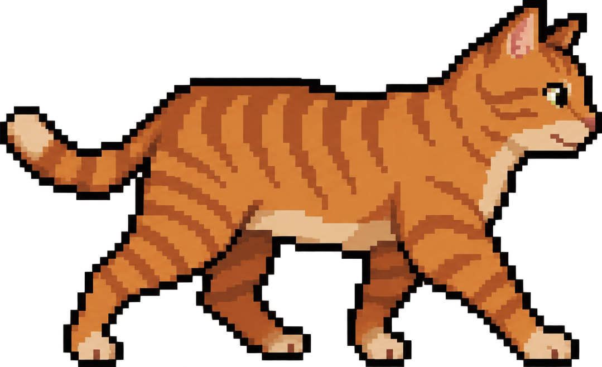
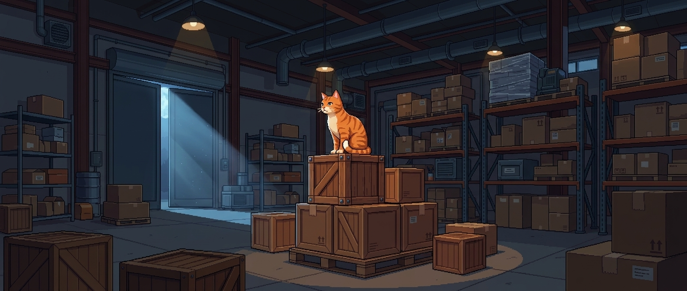
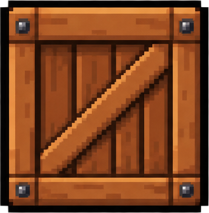

Score: 0

PAUSE
BACKGROUND MUSIC SELECTOR
[x] CAT CHASE
[ ] CRATE CONGA
SOUND LEVELS
Music Volume:
30%
SFX Volume:
30%
RESUME
RESTART
GAME OVER
Your score:
0
High score:
0
RESTART
MAIN MENU
Whisker's Warehouse Leap

SETTINGS
BACKGROUND MUSIC SELECTOR
[x] CAT CHASE
[ ] CRATE CONGA
SOUND LEVELS
Music Volume:
30%
SFX Volume:
30%
EXIT
HOW TO PLAY

SPACE
Press SPACE to jump over crates
EXIT